.jpg){kind=link}
Key findings
- Reusable Falcon rockets cut the cost of reaching orbit about 20-fold compared with the Space Shuttle. Starship aims far lower, but that is still a target.
- Tesla pushed the car industry towards electric cars and set the North American charging plug standard. BYD now sells more battery cars.
- Starlink connects 13.6 million subscribers, including in war zones and disasters. That also gives one company a lot of power, as Ukraine showed.
- Announced timelines, especially for self-driving, have often slipped (see Timelines). Driverless robotaxis now run in limited zones of eight US cities.
- His politics, DOGE and his running of X drew criticism that courts, auditors or data often backed up. He says he feels “pretty foolish” about his 2026 election spending.
How I made this, and corrections
I built this page from public sources, linked under every section. I researched it with help from an AI assistant and checked the facts against those sources. Company figures are labelled as such, and my own opinion is only in the personal note near the end. Spotted a mistake or a newer number? Corrections are welcome.
Summary
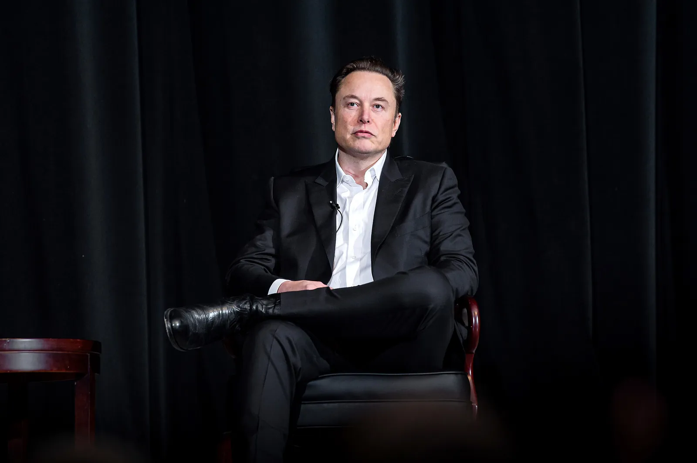

How to read it: each section gives the facts first, then the main criticism. Numbers carry their date. Company figures are marked as such.
Tesla and the EV push


.jpg){kind=link}
What it could mean Electric cars are quiet, have no exhaust in the street and cost less to run per kilometre, so cities could get cleaner air and less noise. If cars one day drive themselves safely, people who cannot drive, such as many older or disabled people, could travel on their own. The other side: batteries need mined raw materials, and an electric car is only as clean as the power that charges it.
In short: Tesla made electric cars desirable, opened its patents and charging plug, and pushed the whole car industry towards EVs. Others drove the shift too, and BYD now sells more battery cars than Tesla.
“Tesla will not initiate patent lawsuits against anyone who, in good faith, wants to use our technology.”
- Open patents (2014)
- On 12 Jun 2014 Tesla said it will not sue anyone who uses its patents “in good faith”. Fine print: a user may not sue Tesla over any IP or sell knock-offs, so it is a truce more than a gift.
- Charging plug as standard
- Tesla published its plug design in Nov 2022. Ford signed in May 2023; by end 2023 nearly every big carmaker in North America followed. SAE published it as standard J3400 in Sep 2024.
- Superchargers for all
- First opened to other brands at 10 Dutch sites in Nov 2021, including Duiven and Hengelo. By Oct 2026: about 85,000 stalls at 9,000 sites; 61,071 stalls (72%) accept other EVs.
Read more (2 more points)
- Market effect
- Global EV sales passed 20 million in 2025, 25% of new cars (IEA). One study estimates about 33% fewer plug-in hybrids without Tesla's open patents. Another found Tesla's entry into China grew demand for local EV makers too.
- Counterpoint
- Policy and imitation also drove the shift, not Tesla alone. Tesla lost the top spot: BYD sold about 2.26 million BEVs in 2025 vs 1.64 million Tesla deliveries (down 8.6%).
Sources for this section (12)
- Tesla · All Our Patent Are Belong To You
- Road & Track · Why other car companies dont use tesla superchargers
- TechCrunch, 25 Mar 2025 · Tesla superchargers gm ford rivian and other ev brands…
- US Joint Office (reginfo.gov) · J3400 (NACS) market development update
- Reuters, 1 Nov 2021 · Tesla opens charging network other evs netherlands
- TeslaNorth, 1 Nov 2021 · Tesla opens up superchargers to non tesla vehicles in the…
- Not a Tesla App · Tesla hits 85000 superchargers at 9000 locations worldwide
- IEA · Global EV Outlook 2026: executive summary
- Univ. Bonn CRC TR 224 · Does open source pay off in the EV industry? Tesla's…
- SSRN · A shark or catfish? Tesla's entry into China's EV market
- Business Strategy and the Environment (Wiley) · Driving the electric bandwagon: incumbents' sustainable…
- CNBC, 2 Jan 2026 · Chinas byd to overtake tesla as worlds top ev seller for…
SpaceX: reusable rockets and launch cost
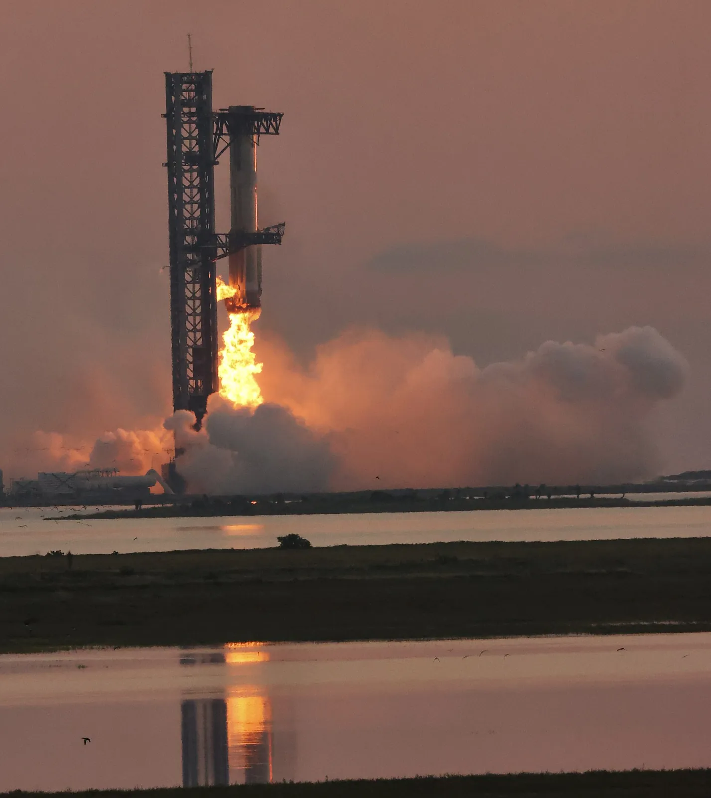
.jpg){kind=link}
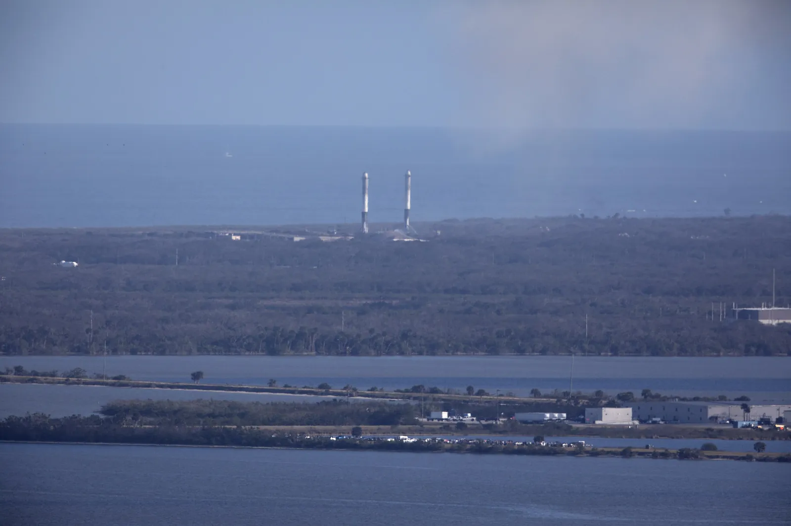

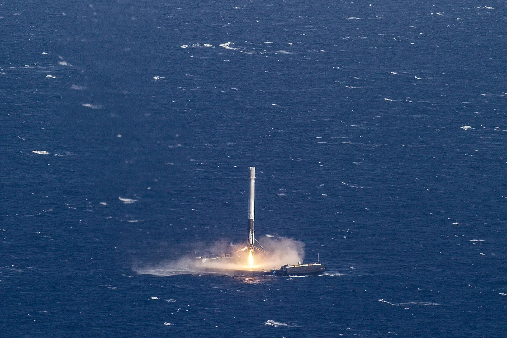

What it could mean In the Space Shuttle era, putting one kilogram into orbit cost tens of thousands of dollars. Today a small satellite can ride along on a SpaceX rocket from $350,000 for 50 kg (SpaceX's published rideshare price). At Musk's target of about $10 per kilogram, the same 50 kg would cost about $500 to launch, cheap enough for a school, a small company or a research group with a real use to put up its own satellite. That is a target, not reality yet, and more launches also mean busier orbits and more debris to manage.
In short: SpaceX made rocket boosters that land and fly again, which cut the price of reaching orbit many times over. Starship aims to cut it much further; it has reached orbit and been caught, but that goal is not reached yet.
“Shuttle’s launch cost was about 20 times that of the Falcon 9 and about 40 times that of the Falcon Heavy.”
Cost per kg to low Earth orbit at full payload, from NASA analyst Harry Jones (2018). Real missions vary.
| Rocket | Cost per kg to LEO | Basis |
|---|---|---|
| Space Shuttle | about $54,500 | about $1.5 billion per launch, 27,500 kg |
| Falcon 9 | about $2,720 | $62 million list price, 22,800 kg |
| Falcon Heavy | about $1,400 | 2018 dollars, same paper |
Chart data as a table
| Rocket | First launch | $ per kg (history in 2018 $) |
|---|---|---|
| Atlas-Centaur | 1964 | $28,000 |
| Saturn V | 1968 | $5,200 |
| Space Shuttle | 1981 | $61,700 |
| Delta II | 1989 | $15,300 |
| Ariane 5G | 1996 | $13,100 |
| Falcon 9 | 2010 | $2,700 |
| Falcon Heavy | 2018 | $1,400 |
| Starship, weekly launches (projection) | ~50 a year | ~$65–97/kg (calculated, see below) |
| Starship, hourly launches (projection) | ~8,760 a year | ~$15–22/kg (calculated, see below) |
| Starship, long-term vision* | — | $10: Musk’s “maybe even as low as a million dollars per flight” (2022) ÷ 100 t |
How we calculated this
Cost per flight = propellant + refurbishment + flight operations + ground sites + (vehicle build cost ÷ flights per vehicle). Cost per kg = cost per flight ÷ payload. Inputs are public statements and estimates of future costs, so the result is a projection. Development costs (Payload Research: about $10B) are not included.
| Input | Weekly launches | Hourly launches |
|---|---|---|
| Flights a year | 52 (SpaceX expects weekly flights in H1 2027) [1] | 8,760, one an hour (Musk: “more than once an hour”, “>10k/year”) [2] |
| Payload per flight | 100–150 t (SpaceX: “100+ t” fully reusable; design range 100–150 t) [3][4] | same |
| Propellant | $0.90M (Musk, 2019) [5] | $0.90M |
| Refurbishment | $2.4M: Falcon 9 share, $1M on a ~$37M booster (2.7%), applied to the stack [6] | $0: design goal “launch again without refurbishment” [3] |
| Flight operations | $1.1M: Musk’s ~$2M per mission minus $0.9M propellant [5] | $1.1M |
| Ground sites | $2.9M: Starbase ~$3B built [7], over 20 years = $150M a year, ÷ 52 flights | $0.17M: 10 such sites ($1.5B a year) ÷ 8,760 flights |
| Vehicle build cost ÷ flights per vehicle | $90M ÷ 37 = $2.4M: 2024 build cost [8]; 37 = Falcon 9 booster reuse record [9] | $35M ÷ 1,000 = $0.04M: mass-production cost [10]; 1,000 = Musk’s design rate of ~1,000 flights per vehicle per year, life 20–30 years [11] |
| Cost per flight | $9.7M | $2.2M |
| Cost per kg | $97 (100 t) to $65 (150 t) | $22 (100 t) to $15 (150 t) |
Launch rate is a proxy, not the only factor. The two tiers use launch rate as a stand-in for how far along Starship is. Other improvements would push cost per kg lower than this rate-only calculation:
- Bigger ships. SpaceX says Starship V3 is designed to carry 100 t fully reusable, and future versions could reach 200 t as soon as V4 [5]. Musk (May 2026): “Probably over 200 tons of useful load to a useful orbit per flight” by the time of 10,000+ launches a year [2].
- Better engines, version after version. Each Raptor so far has been stronger and lighter: Raptor 1 had 185 tonnes of thrust at 2,080 kg, Raptor 2 230 t at 1,630 kg, and Raptor 3 280 t at 1,525 kg, with its plumbing moved inside for rapid reuse (SpaceX figures, Aug 2024) [12]. By the time Starship launches every hour, SpaceX will likely be several generations further, at a Raptor 5 or 6, with ships improved in the same way. That is an expectation: nothing has been published about those versions, and the gains usually get smaller as a design matures.
- Refined operations. Faster turnaround and simpler procedures lower refurbishment and ground costs per flight.
Example, not a forecast: at 200 t per flight and the same cost per flight as above, weekly launches would be about $49/kg and hourly launches about $11/kg.
- SpaceX Q3 2026 earnings call (ElonFAQs transcript)
- Musk on hourly flights and >10k launches a year (ElonsFAQ)
- SpaceX: Starship vehicle page
- Rational Futures 2025: 100–150 t reusable design
- New Space Economy 2026: Musk 2019, ~$0.9M propellant, ~$2M per mission; SpaceX S-1/A, V3 100 t, V4 up to 200 t
- Inverse 2020: Falcon 9 refurbishment ~$1M, under 10%; booster ~$37M
- Motley Fool 2024 on Payload Research: Starbase $3B; future stack ~$35M
- Ars Technica 2024 on Payload Research: ~$90M per stack
- Falcon 9 booster reuse record (see the SpaceX table above)
- Motley Fool 2024 on Payload Research (mass-production cost)
- TechCrunch 2020: ~1,000 flights per vehicle per year, 20–30 year life
- New Space Economy 2026: Raptor 1, 2 and 3 figures published by SpaceX (Aug 2024)
- Reuse (24 Nov 2026)
- 719 Falcon launches, 678 booster landings, 651 flights on a reused booster (Wikipedia as of 22 Nov 2026, plus USSF-266 on 24 Nov: booster B1081's 29th flight, landed on Of Course I Still Love You). Record: booster B1067 flew 37 times.
- Starship
- 15 test flights. Flight 15 (13–14 Nov 2026): Ship 42 reached orbit, deployed 26 Starlink V3 satellites and was caught by the Starbase tower after about 22.5 hours, the first upper-stage catch ever. Musk said on 15 Nov the heat shield and engines “look great” and the ship “could probably be reflown with a few weeks of refurbishment,” though “many small fixes” are still needed for airplane-like reuse; reported damage was minor (hot-staging marks on the aft skirt and one missing tile). On 18 Nov he said Ship 42 will be retired for public display because it is historic. SpaceX president Gwynne Shotwell has said the company aims to refly a recovered ship in early 2027. Booster 22 aborted its catch after a low-fuel alarm and was destroyed over the Gulf. Super Heavy boosters had already been caught three times and reflown twice (B14, B15).
- Counterpoint
- Both stages have now been recovered intact: the booster is proven reusable (caught and flown again), and the ship has been shown recoverable in good condition, but a ship reflight is still to come. SpaceX was saved in 2008 by a $1.6 billion NASA cargo contract; public money mattered. Mars plans were pushed back in Feb 2026 to focus on the Moon.
Sources for this section (24)
- NASA NTRS · The recent large reduction in space launch cost (Jones)
- NASA NTRS · The impact of lower launch cost on space life support…
- Wikipedia · Falcon rocket statistics (updated 22 Nov 2026)
- Spaceflight Now, 24 Nov 2026 · SpaceX launches classified payload for the U.S. Space…
- SpaceX · Starship Flight 15
- Spaceflight Now, 13 Nov 2026 · Live coverage starship flight 15 attempts to recover full…
- Starlust, 15 Nov 2026 · Elon Musk inspects Starship Flight 15 upper stage: could…
- SpaceWireDaily, 21 Nov 2026 · Following Ship 42's catch, SpaceX looks to the next flight
- Space.com, 21 Nov 2026 · SpaceX will retire 1st Starship upper stage ever caught by…
- Ars Technica, 21 Oct 2026 · SpaceX to attempt Starship catch on next flight, with eye…
- Ars Technica, Apr 2016 · Without nasa there would be no spacex and its brilliant…
- Reuters, 8 Feb 2026 · Musk says spacex prioritise building self growing city…
- Rational Futures, Oct 2025 · Opportunity costs drive the market price of Starship…
- New Space Economy, 21 Jun 2026 · How accurate were Elon Musk's Falcon 9 and Starship $/kg…
- SpaceX · Capabilities & Services (Falcon 9 list price $74M)
- ElonsFAQ · When will Starship fly hourly? Musk's answers 2020–2026…
- ElonFAQs · How is Starship progressing? (SpaceX Q3 2026 call: weekly…
- What's Up Tesla, 2026 · Musk with Dwarkesh Patel: 10,000 launches a year with…
- Inverse, 2020 · Elon Musk breaks down the cost of reusable rockets (Falcon…
- Ars Technica, 19 Jan 2024 · Rocket Report: a new estimate of Starship costs (Payload…
- Motley Fool, 11 Feb 2024 · The secret to SpaceX's $10 million Starship (Payload…
- TechCrunch, 17 Jan 2020 · Musk: Starship 20 to 30-year service life, ~1,000 flights…
- SpaceX · Starship (100+ t fully reusable; reuse without…
- New Space Economy, 16 Apr 2026 · SpaceX Raptor 3 engines and the next step in Starship…
Starlink
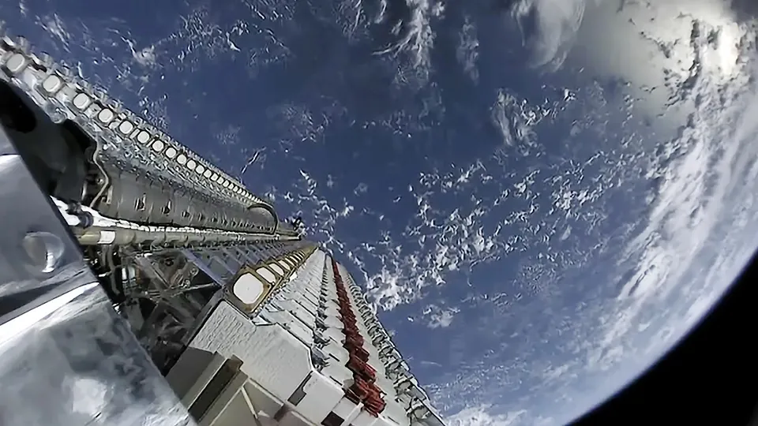
.jpg){kind=link}


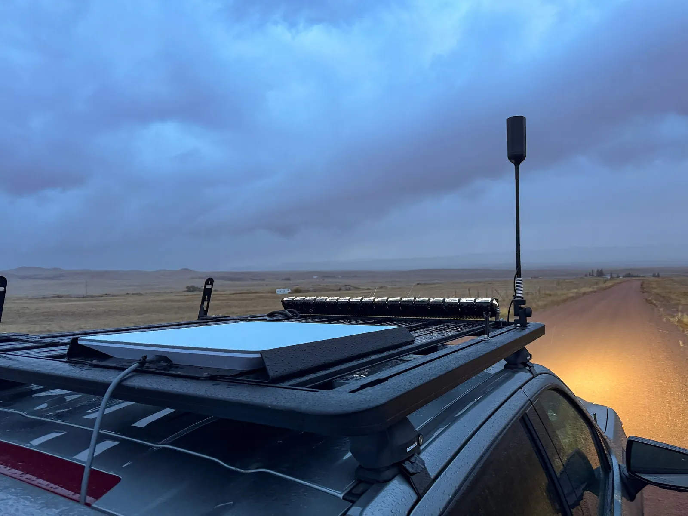
.jpg){kind=link}
What it could mean About 2.2 billion people are still offline, most of them in poorer countries (ITU, 2025). Satellite internet can reach a farm, a ship, a mountain village or a town after a hurricane, where no cable or mast exists, so school, work, health advice and emergency help come within reach. The other side: the same internet that connects people can also divide them, and when one company runs much of the network, it holds real power over who stays connected.
In short: Starlink brings internet to 13.6 million subscribers, including remote areas, disaster zones and Ukraine's front line. That reach also gives one private company a lot of power.
- Reach
- 13.6 million subscribers in 174 countries and markets on 30 Sep 2026.
- Remote areas
- Starlink says it connected over 6 million students in 2025 (company figure).
- Disasters
- LA wildfires, Jan 2025: over 400,000 people connected by phone via satellite and sent 250,000+ texts. Hurricane Melissa, Jamaica, 2025: about 1,000 donated kits and 1.1 million texts in the first month. Both are Starlink's own figures.
Read more (3 more points)
- Direct to Cell rescues
- A Girl Scout who fell into a Southern California canyon shared her location with 911. A driver in a New Zealand dead zone reported a crash. Over 12 million people have connected at least once (company figure).
- Ukraine
- Terminals arrived on 28 Feb 2022. SpaceX first paid much of the service; Musk said in Oct 2022 it cost close to $20 million a month. The Pentagon signed a contract in Jun 2023; Poland says it pays about $50 million a year. In Feb 2026 SpaceX limited service to registered terminals, cutting off Russian use.
- Lives saved
- No official total of lives saved exists. The cases above are single stories, mostly told by SpaceX or its partners.
Sources for this section (8)
- Fierce Network · Starlink broadband marches onward 16m new global subs q3
- Starlink · Starlink Progress Report 2025
- Wikipedia · Starlink in the Russo Ukrainian war
- Washington Post, 12 Sep 2023 · Elon musk walter isaacson ukraine
- The Guardian · Elon musk biographer admits suggestion spacex head blocked…
- Kyiv Independent · Ukrainian front line would collapse if starlink is turned…
- BBC · Cy87vg38dnpo
- ITU, 2025 · Facts and Figures 2025: 2.2 billion people remain offline
Starlink in Ukraine: Crimea and Starshield
What happened around Sevastopol in Sep 2022, how the story was first reported and corrected, and what each side said. Quotes are attributed; no official finding has been published.
In short: In Sep 2022 Starlink did not cover Crimea, and Musk refused a request to switch it on for a Ukrainian drone attack; early reports that he switched it off were corrected. There is no official finding, so the box below shows each side's incentives instead of a verdict.
“It was never intended to be weaponized.”
Read the full account (11 points, from 2022 to 2025)
- Background (2022–2023)
- SpaceX sent Starlink terminals to Ukraine from 28 Feb 2022. In Jan 2023 Musk wrote that Starlink had “become the connectivity backbone of Ukraine all the way up to the front lines” but that SpaceX was “not allowing Starlink to be used for long-range drone strikes”. In Feb 2023 SpaceX president Gwynne Shotwell said it “was never intended to be weaponized”; SpaceX had taken steps to stop its use for controlling drones, while military communications use was “OK”.
- Starlink's terms
- Starlink's terms of service say it is a commercial product and “not designed or intended for use with or in offensive or defensive weaponry or other comparable end-uses”. Custom military modifications can bring it under US export-control law (ITAR/EAR).
- The Crimea episode (Sep 2022)
- Ukraine planned an attack with explosive sea drones on Russia's Black Sea Fleet at Sevastopol. Starlink coverage near the Crimean coast was not active. Ukraine sent an emergency request to switch it on; Musk declined. The drones lost connection. According to Isaacson's book, Musk said he had spoken with Russia's ambassador to the US, who warned that an attack on Crimea could lead to a nuclear response.
- The first report and the correction (Sep 2023)
- A CNN excerpt of Walter Isaacson's biography (7 Sep 2023) said Musk “secretly told his engineers to turn off coverage within 100 kilometers of the Crimean coast”, so the drones “washed ashore harmlessly”. Musk replied on X that “the Starlink regions in question were not activated. SpaceX did not deactivate anything.” On 9 Sep Isaacson corrected himself: he had “mistakenly thought” the policy was decided that night; it “had been implemented earlier, but the Ukrainians did not know it.” Later printings of the book were changed.
- What Musk said
- “There was an emergency request from government authorities to activate Starlink all the way to Sevastopol. The obvious intent being to sink most of the Russian fleet at anchor. If I had agreed to their request, then SpaceX would be explicitly complicit in a major act of war and conflict escalation.” He added that SpaceX's terms “clearly prohibit Starlink for offensive military action, as we are a civilian system”, and that Starshield, built for the US government, “will be owned and controlled by the U.S. government”. He also said coverage over Crimea was off because of US sanctions on Russia, and that he would have enabled it if the US President had ordered it.
- What Ukrainian officials said
- Presidential adviser Mykhailo Podolyak (Sep 2023): by not allowing the drones to strike “via Starlink interference”, Musk “allowed this fleet to fire Kalibr missiles at Ukrainian cities”. Earlier, digital minister Mykhailo Fedorov had called Musk “one of the biggest private donors of our future victory” and said Starlink “help[s] save thousands of lives daily” (Feb 2023). In Feb 2026, as defence minister, Fedorov called Musk “a true champion of freedom and a true friend of the Ukrainian people” after SpaceX limited service to verified terminals, cutting off Russian forces' use.
- What US officials said
- Senate Armed Services chairman Jack Reed (14 Sep 2023): “Neither Elon Musk, nor any private citizen, can have the last word when it comes to U.S. national security.” Senators Shaheen, Warren and Duckworth asked the Pentagon on 15 Sep 2023 to explain what happened and whether providers can cut service. The Pentagon had already signed a contract to pay for Starlink in Ukraine in Jun 2023.
- Official findings
- None published. The Senate committee said it was “probing” the issue, but no formal report or public Pentagon answer to the senators' letter could be found as of 24 Nov 2026.
- Starshield
- Starshield is SpaceX's separate, government-only version of Starlink technology with extra encryption. The Space Force gave it a $70 million one-year contract in 2023. Reuters reported in Mar 2024 that SpaceX is building hundreds of spy satellites under a $1.8 billion contract signed in 2021 with the National Reconnaissance Office.
- The Sikorski exchange (Mar 2025)
- Musk wrote that Starlink is “the backbone of the Ukrainian army” and its “entire front line would collapse if I turned it off”. Poland's foreign minister Radosław Sikorski replied that Poland pays about $50 million a year for Ukraine's Starlink and would look for other suppliers if SpaceX proved unreliable. Musk answered “Be quiet, small man”; US Secretary of State Marco Rubio told Sikorski to “say thank you”. Musk then wrote that “Starlink will never turn off its terminals” in Ukraine.
- Reported contacts with Russia
- The Wall Street Journal reported in Oct 2024 that Musk had been in regular contact with Vladimir Putin since late 2022. The Kremlin denied it and said they spoke once, before 2022, about space and technology. Musk did not confirm the report. It remains unverified.
Sources for this section (19)
- Ars Technica, 10 Feb 2023 · SpaceX says it blocked Ukraine from using Starlink with…
- Reuters, 9 Feb 2023 · SpaceX curbed Ukraine's use of Starlink internet for…
- Starlink · Starlink legal documents (terms of service, section 8.5)
- CNN, 7 Sep 2023 · New Elon Musk biography offers fresh details about the…
- Reuters, 8 Sep 2023 · Musk says he refused Kyiv request for Starlink use in…
- BBC, 8 Sep 2023 · Elon Musk says he withheld Starlink over Crimea to avoid…
- Fortune, 11 Sep 2023 · Isaacson forced to correct failed drone strike detail
- The Guardian, 12 Sep 2023 · Elon Musk biographer admits suggestion SpaceX head blocked…
- NBC News, 8 Sep 2023 · Musk under fire from Ukraine over Starlink refusal…
- Engadget, Sep 2023 · The US Senate wants answers over Starlink's Ukrainian…
- US Senate, 14 Sep 2023 · Sen. Reed: Starlink highlights vulnerabilities that must…
- NBC News, 15 Sep 2023 · Shaheen, Warren and Duckworth ask DOD if Musk limited…
- Space.com, 2 Oct 2023 · SpaceX wins $70 million Space Force contract for…
- Reuters, 16 Mar 2024 · Musk's SpaceX is building spy satellite network for US…
- Reuters, 9 Mar 2025 · 'Say thank you,' Rubio tells Poland amid Ukraine Starlink…
- Kyiv Independent, Mar 2025 · Starlink will 'never' shut off its terminals in Ukraine,…
- VOA, Oct 2024 · Kremlin denies WSJ report of Elon Musk's contacts with…
- Reuters, 5 Feb 2026 · Ukraine says Starlink terminals used by Russia deactivated
- BBC, Feb 2026 · Elon Musk praised after restricting Russian Starlink use
Energy: Powerwall, Megapack, solar


What it could mean Sun and wind do not always deliver when people need power. Large batteries store the surplus at midday and give it back in the evening, which could mean fewer blackouts, fewer gas plants that only run at peak times and more use of clean power. The other side: batteries need raw materials, and large battery fires, though rare, are hard to put out.
In short: Tesla sells big batteries for power grids (Megapack) and homes (Powerwall). Storage has grown fast, roughly tenfold from 2021 to 2025, and is now a real business next to the cars.
Tesla storage deployments, Megapack and Powerwall combined (Tesla reports them together).
| Year | Storage deployed |
|---|---|
| 2021 | 4.0 GWh |
| 2022 | 6.5 GWh |
| 2023 | 14.7 GWh |
| 2024 | 31.4 GWh |
| 2025 | 46.7 GWh (record Q4: 14.2 GWh) |
| 2026, Q1–Q3 | 36.0 GWh (Q3: 13.7 GWh) |
Total since 2021: about 139 GWh (own sum of Tesla's figures). Over 1 million Powerwalls are installed (Tesla, Q4 2025). Megafactory Texas began production in 2026.
Solar is the weak spot. Tesla bought SolarCity in 2016 for $2.6 billion; shareholders sued, calling it a bailout of a struggling firm tied to Musk. Delaware courts ruled the price fair (upheld Jun 2023). Solar Roof installs ramped very slowly.
Sources for this section (5)
- Musk Industries · How much grid storage has tesla actually deployed
- SEC / Tesla · Tesla Q3 2026 production, deliveries and deployments
- SEC / Tesla · Tesla Q4 and full-year 2025 update
- Reuters, 6 Jun 2023 · Court upholds ruling musk over tesla solarcity deal
- CNBC, 24 Sep 2018 · Tesla solar roof tiles where are they
Neuralink
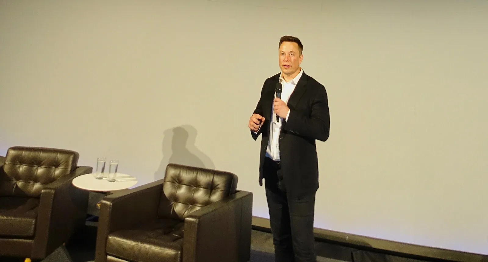
.jpg){kind=link}


What it could mean For someone who cannot move their arms or legs, controlling a computer or a robot arm just by thinking could bring back a lot of independence: writing messages, browsing, playing games, eating without help. Neuralink's first patient already plays chess this way. Restoring sight is the next goal, and still only a goal. The other side: it takes brain surgery, the long-term effects are unknown, and brain data is about as private as data gets.
- Patients
- First implant Jan 2024 (Noland Arbaugh). 12 people by Sep 2025, 21 by Jan 2026, and “over 30” according to Musk on 18 Nov 2026.
- Results
- Noland plays chess and Civilization VI by thought. He set a cursor-control record of 8.0 bits per second. Musk says some patients now feed themselves with a robot arm.
- Blindsight
- FDA Breakthrough Device label in Sep 2024. As of Nov 2026, no public human implant and no restored vision. Musk said on 29 Oct 2026 it is ready from an engineering standpoint and is waiting on regulatory approval.
Read more (2 more points)
- Real weight
- Life-changing for a few dozen people. Still early trials; no device approved for sale; results mostly reported by Neuralink itself.
- Criticism
- About 85% of Noland's threads pulled out weeks after surgery; software made up for it. Reuters reported the wire problem was known from animal tests. Reuters (Dec 2022): about 1,500 animals killed since 2018 and a federal probe over rushed tests. The USDA later found no breaches beyond a self-reported 2019 incident.
Sources for this section (8)
- Neura Pod · Neuralink 30 patients elon musk
- Neuralink · PRIME study progress update: user experience
- TechBloat · Neuralink blindsight what we know about the vision…
- Tom's Hardware, 29 Oct 2026 · Elon Musk says Neuralink is ready to cure blindness,…
- Ars Technica, May 2024 · Neuralink to implant 2nd human with brain chip as 75 of…
- Reuters, 15 May 2024 · Musks neuralink has faced issues with its tiny wires years…
- Reuters, 5 Dec 2022 · Musks neuralink faces federal probe employee backlash over…
- Reuters, 19 Jul 2023 · Regulator says found no animal welfare breaches musk firm…
The Boring Company
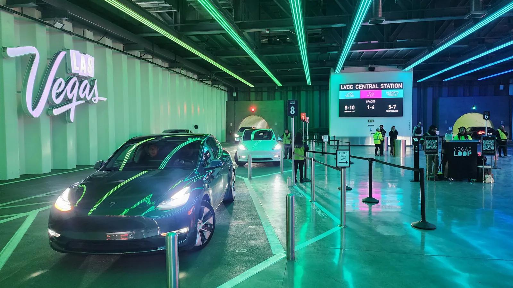


.jpg){kind=link}
What it could mean Tunnels in the US often cost hundreds of millions of dollars per mile, according to the Boring Company. If digging became ten or more times cheaper, cities could afford more transport under the ground instead of more lanes above it. The other side: so far the company has built one small system, and cars in a tunnel carry far fewer people per hour than a train.
- Ambition
- Cheap, fast tunnels to beat city traffic, plus the 2013 Hyperloop idea (LA to San Francisco in 35 minutes).
- Built
- Vegas Loop, open since 2021: about 14 stations and over 4 million passengers. Rides are in Tesla cars through tunnels, not a high-speed system.
- Still waiting
- Plan: 68 miles and 123 stations. The 2-mile Paradise Road extension still lacked an occupancy certificate on 19 Nov 2026. Nashville tunnelling started in 2026; Dubai signed a 6.4 km pilot.
- Cancelled or stalled
- Chicago O'Hare express, LA test tunnel and Dodger Stadium loop, Fort Lauderdale beach loop, DC–Baltimore. The WSJ (2022) said it had “ghosted” cities across the US.
Honest verdict: a working but small system after nine years. Far less than promised, more than critics expected.
Sources for this section (8)
- Las Vegas Review-Journal · Boring co s vegas loop paradise line hits snag ahead of…
- Wikipedia · The Boring Company
- Wall Street Journal · Elon musk boring company tunnel traffic
- Tesla · Hyperloop Alpha white paper (2013)
- Boring Company (archived 2020) · Boring Company FAQ: tunnels often $100 million to $1…
- The Verge, 19 Dec 2018 · I took a ride through Elon Musk's new tunnel (Hawthorne…
- Ethan Elkind, 2018 · Did Elon Musk just revolutionize tunneling technology?…
- Las Vegas Review-Journal, 1 Dec 2025 · Boring Co. president: ~$10M a mile today, aiming for $3–4M
OpenAI and xAI
- Why he co-founded it
- Late 2015, as a non-profit to make AI safe and widely shared. Musk wanted a counterweight to Google/DeepMind.
- Early money
- About $44 million from Musk (his lawsuit); under $45 million (OpenAI). He pushed to announce a $1 billion commitment.
- 2018 split
- Per OpenAI, Musk wanted majority control and the CEO role, or a merger into Tesla. Talks failed and he left the board in Feb 2018.
Read more (3 more points)
- Lawsuit
- Sued in 2024, saying OpenAI betrayed its non-profit mission. On 18 May 2026 a jury found the claims were filed too late; the judge dismissed the case. Appeal to the Ninth Circuit pending (Nov 2026).
- xAI
- Musk's own AI firm, maker of Grok. It bought X in Mar 2025 (X valued at $33 billion). SpaceX acquired xAI in Feb 2026.
- Criticism
- OpenAI says he “told us we would fail, started a competitor, and then sued us”. The jury ruled on timing only, not on whether the mission was betrayed.
Sources for this section (7)
- OpenAI · OpenAI and Elon Musk
- TechCrunch, 1 Mar 2024 · Elon musk openai sam altman court
- AP · Court rejects Elon Musk's claims against OpenAI and Sam…
- Reuters, 18 May 2026 · Elon musk loses lawsuit against openai
- Lawfold · Elon Musk OpenAI lawsuit (updated Oct 2026)
- Reuters, 28 Mar 2025 · Musks xai buys social media platform x 45 billion
- Reuters, 2 Feb 2026 · Musks spacex merge with xai combined valuation 125…
PayPal: the money behind it all
X.com merged with Confinity in 2000. Musk was ousted as CEO in Sep 2000. eBay bought PayPal in 2002 for about $1.5 billion; Musk got about $180 million.
He put it back in: about $100 million into SpaceX, $70 million into Tesla and $10 million into SolarCity, and says he then borrowed money for rent.
Sources for this section (2)
- Washington Post, 25 Jul 2023 · Elon musk paypal twitter x rebrand
- Startups.com · Too crazy to be lucky: interview with Elon Musk
Contested stories
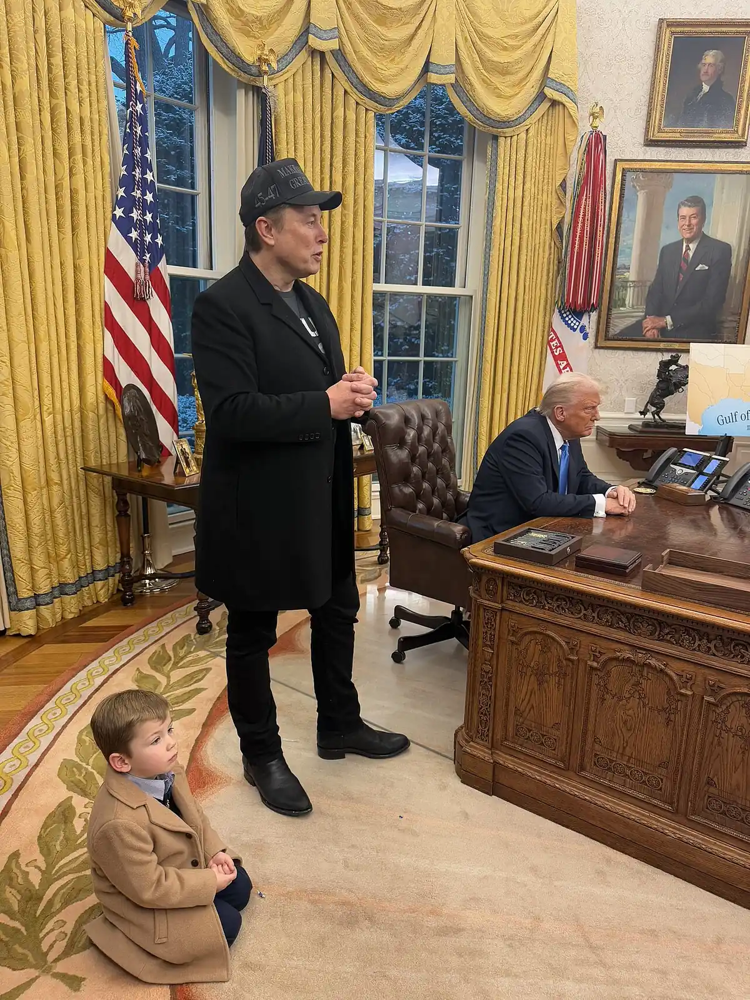

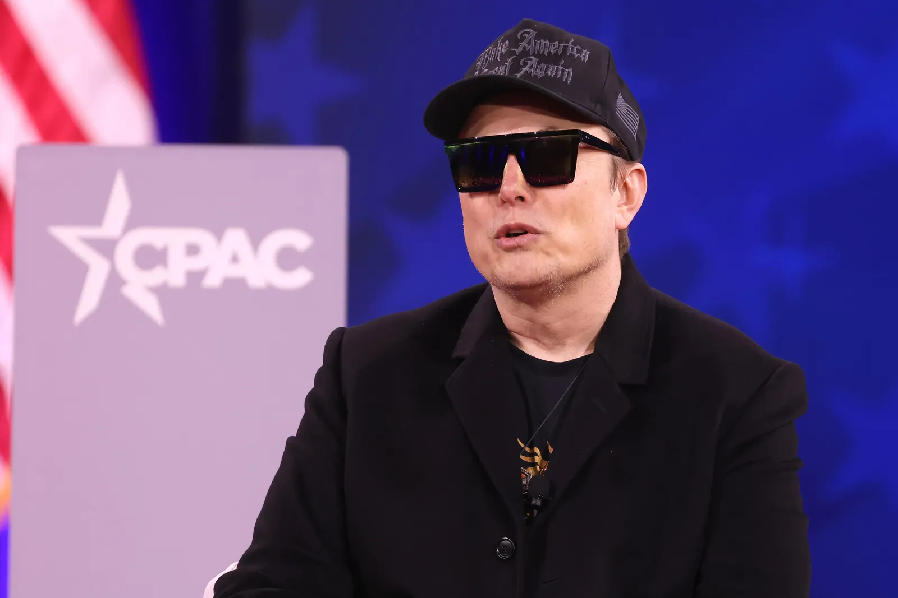
.jpg){kind=link}
In short: Four stories where people strongly disagree: his politics, DOGE, Twitter/X and how he treats staff. For each: his stated goal, what the numbers show, the main criticism, and how left, centre and right media covered it.
“I feel pretty foolish about having spent so much money and not seeing much for it.”
Ground News coverage split = share of bias-rated sources leaning left / centre / right on that story page, fetched 24 Nov 2026. None of these pages carried a Blindspot flag.
| Story | Goal and reasoning | What happened (numbers) | Main criticism (evidence) | Ground News split L / C / R |
|---|---|---|---|---|
| Politics | 2024: back Trump (endorsed 13 Jul 2024). 2026: keep a Republican Senate to “preserve checks and balances” (his words). | Over $290 million in 2024. America Party announced Jul 2025, then reported shelved (Musk denied). About $445 million in the 2026 midterms; Democrats won both chambers. Musk on 19 Nov 2026: “pretty foolish”, “I'm not MAGA”. | Outsized influence of one donor. Only 3 of 37 House candidates he backed won. Democrats plan oversight probes of his role. | Midterm regret: 35 / 41 / 24 (607 sources). $250M for Trump: 42 / 38 / 20. America Party: 27 / 48 / 25. |
| DOGE | Cut waste. Musk first said “at least $2 trillion”, later $1 trillion. | Site claimed $214 billion (Nov 2025). GAO (Aug 2026): $110 billion checked was unreliable; 2,503 “cut” contracts were never terminated; a $1.7 billion contract was still active. About 317,000 federal staff left in 2025. Declared dissolved Nov 2025. | Verified savings a small fraction of claims (Politico: about $1.4 billion of $32.7 billion checked). A good-government group estimated $135 billion in costs in the first 100 days. | Disbands early: 32 / 35 / 33 (210 sources). GAO errors: 21 / 58 / 21 (136 sources). |
| Twitter / X | Free speech; “the bird is freed”. A lean, “extremely hardcore” culture. | $44 billion, Oct 2022. Staff from about 7,500 to 1,500 (80%). 2023 ad revenue about $2.5 billion, down over 45% from 2021. Fidelity marked it as low as $9 billion (2024); xAI bought it at $33 billion (Mar 2025). Adjusted earnings $1.2 billion in 2024. | Jury (Mar 2026): two May 2022 tweets misled Twitter investors; damages estimated at $2.5 billion; opening brief filed 23 Nov 2026. Over 2,000 severance arbitrations; the $128 million executives' suit was settled (Oct 2025). | Investor verdict: 27 / 55 / 18 (376 sources). X back to $44bn value: 20 / 62 / 18. Appeal (24 Nov 2026): 0 / 67 / 33 (7 sources). |
| Employees | Keep production going; move fast with lean teams. | Fremont reopened May 2020 despite a county order; about 450 worker COVID cases May–Dec 2020. Racism: Owen Diaz jury $137 million (2021), cut to $3.2 million on retrial (2023). Class action decertified Nov 2025; partial settlement Jul 2026; California civil rights trial closed, ruling pending. | Cal/OSHA said Tesla left hundreds of injuries out of summary reports (2020). Repeated race-bias claims at Fremont. | Not checked (mainly labour and legal stories). |
Sources for this section (22)
- Reuters, 13 Jul 2024 · Elon musk says he fully endorses tough trump posts photo
- CNN, 1 Feb 2025 · Elon musk 2024 election spending millions
- Reuters, 20 Aug 2025 · Musk quietly puts brakes plans new political party wsj…
- CNN, 20 Aug 2025 · Elon musk america party
- OpenSecrets, Nov 2026 · Elon musks 445m spending spree tops 2026 midterm donor…
- AP · Elon Musk bet $445M to help Republicans in the midterms…
- Reuters via Investing.com · Musk has little to show for his record spending on…
- CBS News · Elon musk not maga midterm spending trump
- Newsweek · Doge is dead what did it actually save
- CNBC, 6 Aug 2026 · Doge elon musk gao government cost cuts
- AP · Auditors find DOGE overstated savings on federal website
- Politico, 12 Aug 2025 · Trump doge contract claims savings inflation
- Reuters, 28 Oct 2022 · Elon musk completes 44 bln acquisition twitter
- Forbes, 5 Feb 2025 · Heres what happened after elon musk cut 80 of xs employees…
- Reuters, 20 Mar 2026 · Musk found liable twitter shareholders fraud lawsuit over…
- CNBC, 20 Mar 2026 · Elon musk determined to be liable for misleading twitter…
- Washington Post, 12 Mar 2021 · Hundreds covid cases reported tesla plant following musks…
- Reuters, 3 Apr 2023 · Jury orders tesla pay 32 mln black ex worker us race bias…
- Reuters, 17 Nov 2025 · Tesla wins bid undo race bias class action by black…
- Electrek, 27 Jul 2026 · Tesla partly settles racism lawsuit hundreds of workers…
- Bloomberg Law · Tesla workers testify to persistent racial slurs as trial…
- Los Angeles Times · Tesla left injuries out of reports california safety…
Ground News story pages (8)
- Ground News · Musk says he felt pretty foolish about scale of midterm…
- Ground News · Elon musk spent 250 million electing trump including…
- Ground News · Musk announces forming of america party in further break…
- Ground News · Trumps government efficiency department disbands eight…
- Ground News · Elon musks doge made big errors in claims of government…
- Ground News · Jury holds musk liable for misleading investors during…
- Ground News · Elon musks x obtains 44bn valuation in sharp turnaround
- Ground News · Elon musk asks us appeals court to throw out twitter fraud…
Free speech vs cancel culture
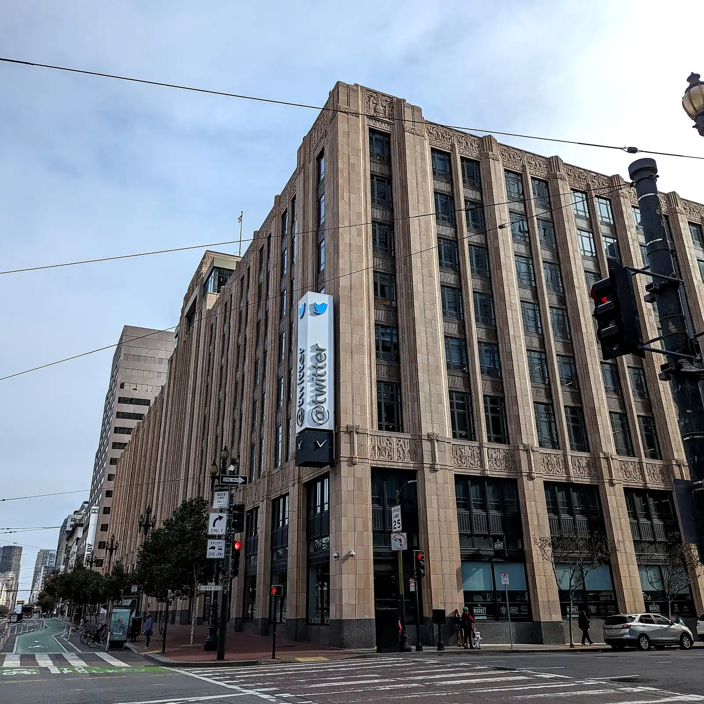

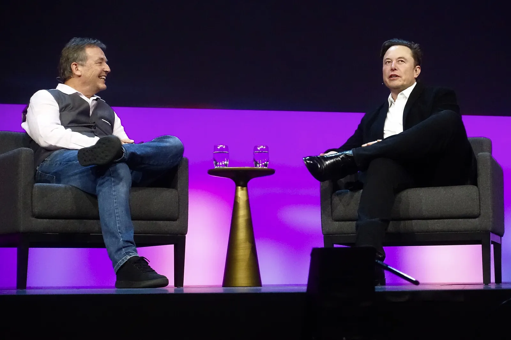
.jpg){kind=link}
In short: Under Musk, X leaned on crowd-written Community Notes, which Meta later copied, and the notes also correct his own posts. Critics show that moderation often follows the owner and that false claims he shared reached millions of people.
“Everybody gets checked. Including me.”
- The push X gave
- The Twitter Files (Dec 2022) showed the FBI often flagged posts and accounts to Twitter, including jokes. In Jan 2025 Meta dropped US fact-checkers and copied X's Community Notes. Musk in Nov 2024: “Everybody gets checked. Including me.” Notes have indeed corrected his own posts.
- Limits of that story
- The Supreme Court (Murthy v. Missouri, Jun 2024) ruled 6–3 that the plaintiffs lacked standing; it did not decide whether government pressure broke free-speech rules.
- Moderation follows the owner
- Dec 2022: several journalists suspended after posting about the @ElonJet tracker, restored two days later after a poll. Feb 2023: engineers built a system to boost Musk's posts. Feb 2025: after notes contradicted claims about Zelensky and his own posts, Musk said notes were “gamed by governments & legacy media” and promised to “fix” them.
Read more (2 more points)
- Government requests
- In its first months under Musk, X fully complied with 83% of government takedown and data requests, up from about 50% (Rest of World, 2023).
- Shared falsehoods
- CCDH, a group critical of X, counted 87 Musk posts in 2024 with election claims rated false or misleading: about 2 billion views, none with a Community Note. In Mar 2020 he tweeted “the coronavirus panic is dumb” and predicted near-zero new US cases by end of April.
Sources for this section (14)
- Twitter Files (Matt Taibbi) · Twitter, the FBI subsidiary (Twitter Files part 6)
- Reason, 16 Dec 2022 · Fbi reported jokes tweets twitter files censorship
- Meta, Jan 2025 · More speech and fewer mistakes
- Reuters, 7 Jan 2025 · Meta ends third party fact checking program adopts x like…
- SCOTUSblog, Jun 2024 · Justices side with biden over governments influence on…
- Reuters, 16 Dec 2022 · Twitter suspends accounts several journalists
- NBC News · Musk reinstates suspended journalists twitter poll
- Platformer · Yes, Elon Musk created a special system for showing you…
- The Hill · Elon musk x community notes feature
- Fortune, 21 Feb 2025 · Elon musk community notes x social media content…
- Rest of World · Elon musk twitter government orders
- CCDH · Musk's political posts on X
- Reuters, 4 Nov 2024 · Wrong claims by musk us election got 2 billion views x…
- CNN, 29 Apr 2020 · Elon musk twitter coronavirus
His public style
In short: He posts fast and often, jokes a lot, and sometimes attacks people or shares false claims. That has led to lawsuits and lost advertisers, and he has admitted some posts were a mistake.
“one of the most foolish, if not the most foolish”
- Public dates
- He often names dates out loud, and many slipped. The facts, his reasons and the criticism are in Timelines.
- Friction: the case for
- Open fights show what he really thinks and drag issues into the open. Friction can be healthy when it is honest.
- Friction he may regret
- 2018: called cave rescuer Vernon Unsworth “pedo guy”; he apologised in court and the jury found him not liable (Dec 2019). Nov 2023: replied “actual truth” to an antisemitic post; at DealBook on 29 Nov 2023 he called it “one of the most foolish, if not the most foolish” things he had posted, and apologised. In the same interview he told departing advertisers to “go f— yourself”.
Sources for this section (6)
- Wikipedia · List of predictions for autonomous Tesla vehicles by Elon…
- CNBC, 15 Oct 2026 · Tesla roadster reveal what to know about the delayed ev
- The Guardian · Elon musk vernon unsworth trial verdict
- AP · Elon Musk cleared of defamation in 'pedo guy' tweet trial
- Rev (transcript) · DealBook Summit 2023: Elon Musk interview transcript
- Deadline, Nov 2023 · Elon musk advertisers twitter x antisemitism
Timelines
In short: Many dates Musk announced were missed, some by years, and self-driving is the clearest example. That can fairly be called a weak point. It also helps to know how hard it is to date something that has never been done before.
- What happened
- Announced dates were often missed. A self-driving drive across the US was promised for the end of 2017, and “over a million robotaxis” for 2020. In Nov 2026, driverless robotaxis run in limited zones of eight US cities. The Tesla Semi was due in 2019 and reached volume production in Sep 2026.
- Why it matters
- Buyers, investors and regulators made decisions based on these dates; the criticism is set out below. This may be a weak point.
- Why new things are hard to date
- For something never built before, there is no earlier project to estimate from, so any date carries large uncertainty. Research on the “planning fallacy” shows people underestimate how long their own tasks take: in one study, students expected to finish their thesis in about 34 days and took about 56 (Buehler and others, 1994). Of more than 16,000 large projects studied by Bent Flyvbjerg, only 8.5% finished on time and on budget (2023). The pattern even has a nickname, Hofstadter's law: “It always takes longer than you expect, even when you take into account Hofstadter's Law” (1979).
- Other companies
- Late dates are common in spaceflight. Boeing's Starliner was due to fly astronauts in 2017 and did so in June 2024. Blue Origin's New Glenn was due to debut in 2020 and first flew in January 2025.
- Public dates or none
- Many companies give no public dates and only show what they are working on. Musk usually says his targets out loud, which makes misses more visible.
- How to read a date
- Read announced timelines as goals with a large margin of error, not as delivery dates.
Example: self-driving targets and what happened
In short: Since 2016 Musk has given a date for self-driving Teslas almost every year, and most of those dates passed without the goal being reached. Driverless robotaxis now run, but only in limited zones of eight US cities, and customer cars still need a watching driver.
| Period | Public target (examples) | What happened (24 Nov 2026) |
|---|---|---|
| 2016–2017 | Self-driving drive from LA to New York by end 2017 | Not done |
| 2018–2021 | Full self-driving “next year”; “over a million robotaxis” in 2020 | Not done Supervised FSD Beta reached all US buyers in Nov 2022 |
| 2022–2023 | Wide release; better than a human by end 2023 | Partly Wide release came, but a driver must watch at all times |
| 2024–2025 | Unsupervised in Texas and California in 2025; robotaxis for half the US | Partly Austin robotaxi from Jun 2025 with safety monitors, without them from Jan 2026; none driverless in California |
| 2026 | Driverless in a quarter to half of the US by end 2026 | Open Limited zones in 8 cities. Unsupervised FSD for customer cars now targeted for Q2 2027, only inside Robotaxi zones (Q3 2026 call). FSD v15 is rolling out, still supervised. |
Robotaxi status, Nov 2026: no safety monitor in Austin since Jan 2026. Paid driverless service in limited areas of eight cities: Austin, Dallas, Fort Worth, Houston and San Antonio in Texas, and Miami, Orlando and Tampa in Florida (Tampa since Jul 2026; San Antonio from 9 Nov). Cybercab rides (no steering wheel or pedals) began in Austin in Sep 2026 and in Dallas on 19 Nov. Austin has 400+ vehicles; other cities a handful to a few dozen. The Bay Area service still has a human driver; no driverless permit in California. California regulators set a 3 Dec vote on robotaxi rules, which would not itself grant Tesla a driverless permit.
“We want to set the most aggressive timeline that we can.”
Every self-driving promise, year by year (11 rows)
Self-driving promises, one per year, with the date the deadline fell due.
| Said | Promise | Reality (24 Nov 2026) |
|---|---|---|
| Oct 2016 | Self-driving LA to New York demo by end 2017 | Not done |
| Apr 2017 | Coast-to-coast drive, no controls touched, Nov/Dec 2017 | Not done |
| Nov 2018 | Full self-driving “next year” (2019) | Not done |
| Apr 2019 | “Over a million robotaxis” in 2020 | Not done |
| Jul 2020 | Basic Level 5 autonomy complete in 2020 | Not done |
| Jan 2021 | Car drives itself better than a human in 2021 | Not done |
| Aug 2022 | Self-driving in wide US release by end 2022 | FSD Beta to all US buyers Nov 2022, still supervised |
| Jul 2023 | Better than human by end 2023 | Not done |
| Oct 2024 | Unsupervised FSD in Texas and California in 2025 | Austin robotaxi Jun 2025 with safety monitors; none driverless in California |
| Jul 2025 | Robotaxis for half the US population by end 2025 | Not done |
| Jan 2026 | Driverless in a quarter to half of the US by end 2026 | Open; limited zones in 8 cities so far |
Other dated goals (4)
| Promise | First target | Reality (24 Nov 2026) |
|---|---|---|
| New Roadster | Deposits taken from 2017 | Shown 15 Oct 2026, not production-ready; production planned 2028 |
| Semi truck | Production 2019 | Volume production began Sep 2026, seven years late; price up about 60% |
| Humans to Mars | Crew launch 2024, arrival 2025 (said Jun 2016) | No Mars flight; Mars pushed back for the Moon (Feb 2026) |
| Hyperloop | White paper 2013 | No system built; Hyperloop One shut down Dec 2023 |
Sources for this section (26)
- Wikipedia · List of predictions for autonomous Tesla vehicles by Elon…
- TechCrunch, 9 Nov 2026 · Tesla expands robotaxi service to san antonio
- TeslaNorth, 24 Nov 2026 · California sets December 3 vote on proposed robotaxi rules
- Teslarati, 19 Nov 2026 · Tesla Cybercab without steering wheel and pedals expands…
- CNBC, 15 Oct 2026 · Tesla roadster reveal what to know about the delayed ev
- Reuters via Investing.com · Teslas new roadster turns in air with spacex thrusters…
- Electrek, 25 Sep 2026 · Tesla semi volume production launch nevada factory
- twoweeks.lol · Elon Musk Mars timeline: every date since 2011
- Reuters, 6 Feb 2026 · Spacex delays mars plans focus moon wsj reports
- Reuters, 21 Dec 2023 · High speed transportation firm hyperloop one shut down…
- TED, Apr 2022 · Elon Musk: A future worth getting excited about…
- Business Insider, Apr 2020 · Elon Musk: Tesla robotaxi network not this year
- Business Insider, Dec 2018 · Elon Musk on missed Model 3 targets (60 Minutes)
- CNBC, 18 Oct 2018 · Saying this to Elon Musk could get you fired (Vance…
- Walter Isaacson, Simon & Schuster, 2023 · Elon Musk (biography; Tom Mueller quotes)
- California DMV · Tesla takes corrective action to avoid DMV suspension
- CNBC, 23 Feb 2026 · Tesla sues California DMV to reverse false advertising…
- NHTSA · Investigation PE25012: FSD traffic safety violations
- Electrek, 21 Oct 2026 · Tesla pushes unsupervised FSD to Q2 2027
- Digital Trends, 22 Nov 2026 · Tesla FSD v15 rollout
- Journal of Personality and Social Psychology, 1994 · Exploring the “planning fallacy”: why people underestimate…
- The Independent Review, 2023 · Review of How Big Things Get Done (Flyvbjerg and Gardner):…
- Wikipedia · Hofstadter's law (Gödel, Escher, Bach, 1979)
- Wikipedia · Boeing Crew Flight Test: originally scheduled for 2017,…
- Defense News, 16 Jan 2025 · Blue Origin's New Glenn rocket debuts (initially due in…
- SAE International · SAE levels of driving automation (J3016)
Lawsuits
In short: Musk and his companies have won some major cases and lost others, and several are still open.
| Case | What it was about | Outcome (24 Nov 2026) |
|---|---|---|
| SEC “funding secured” (2018) | Tweet about taking Tesla private | Settled: $20M fine for Musk, $20M for Tesla, he stepped down as chairman |
| Delaware pay package | 2018 Tesla pay deal | Struck down Jan 2024; restored by Delaware Supreme Court 19 Dec 2025 |
| Twitter investors (Pampena) | Tweets during the 2022 takeover | Jury found him liable on two tweets (Mar 2026); opening brief filed 23 Nov 2026 |
| Twitter severance | Unpaid severance after layoffs | $500M class suit: tentative deal 2025 then faltered; $128M executives' suit settled |
| Musk v. OpenAI | Non-profit mission | Lost: claims too late (18 May 2026); appeal pending |
| Grok deepfakes | Virginia and Oregon sue over sexual deepfakes and abuse images | Filed 23 Nov 2026; just started |
| Benavides (Autopilot) | 2019 Key Largo crash, one death | Jury Aug 2025: Tesla 33% at fault, about $243M; upheld Feb 2026; appeal pending |
| FSD investor suit | Self-driving timelines | Dismissed Sep 2024 as “corporate puffery” |
Sources for this section (11)
- NPR, 29 Sep 2018 · Elon musk settles with sec agrees to step down as tesla…
- Reuters, 19 Dec 2025 · Musk wins appeal restores 2018 tesla pay deal worth 56…
- Reuters, 20 Mar 2026 · Musk found liable twitter shareholders fraud lawsuit over…
- Reuters, 21 Aug 2025 · Musk x corp settle 500 million lawsuit over twitter…
- Law360 · Deal to end Twitter ex-workers' $500M severance suit…
- Ground News · Musks x settles ex twitter executives 128 million…
- AP · Court rejects Elon Musk's claims against OpenAI and Sam…
- AP · Sexual images from Musk's AI chatbot harmed consumers,…
- CNBC, 23 Nov 2026 · Oregon virginia spacex grok deepfake lawsuits
- Reuters, 1 Aug 2025 · Tesla ordered by florida jury pay 243 million fatal…
- Reuters, 20 Feb 2026 · Us judge upholds 243 million verdict against tesla over…
Timeline of criticism
| Period | Main criticism | What happened next |
|---|---|---|
| 1995–2008 | Not taken seriously. Falcon 1 failed three times; a 41-part “Tesla Death Watch” ran in 2008. | Falcon 1 reached orbit on its fourth try (Sep 2008); a NASA contract and new funding saved both firms. |
| 2010–2018 | “It will fail.” Apollo astronauts Armstrong and Cernan doubted commercial crew plans (2010). Dealer lobbies banned Tesla's direct sales in states like Michigan (2014). Tesla was heavily shorted. | Short sellers lost about $40 billion on Tesla in 2020 alone. |
| 2018–2020 | His tweets: “funding secured”, “pedo guy”, COVID claims, defying lockdown at Fremont. | SEC fine, a defamation trial, about 450 worker COVID cases. |
| 2022–2023 | Twitter: mass layoffs, advertisers leaving, journalists suspended, antisemitic-post reply. | Investor fraud verdict (2026); X recovered part of its value. |
| 2024–2026 | Politics, power and AI: record political spending, DOGE, Starlink leverage over Ukraine, Grok deepfakes. | Midterm losses (Nov 2026), GAO audit of DOGE, two state lawsuits over Grok. |
Sources for this section (7)
- Ars Technica, Sep 2018 · Inside the eight desperate weeks that saved spacex from…
- The Truth About Cars · Tesla Death Watch series (2008)
- US Senate Commerce Committee · Neil Armstrong testimony (May 2010)
- Space.com · 8396 neil armstrong obama space plan poorly advised
- Reuters · Michigan becomes fifth US state to thwart direct Tesla car…
- CNN, 6 Jan 2021 · Tesla shorts losses elon musk win
- Nature Human Behaviour · Negativity drives online news consumption (Robertson et…
Scorecard
Own assessment based on the sources above, as of 24 Nov 2026.
| Area | Promised or aimed | Delivered | Verdict |
|---|---|---|---|
| Tesla / EVs | Speed up the move to electric cars | Mass-market EVs, open patents, plug became the US standard; now behind BYD | Largely delivered |
| Self-driving | Full autonomy, a million robotaxis | Supervised FSD; robotaxis in limited zones of 8 cities; Cybercab rides in Austin and Dallas | Partly delivered |
| SpaceX | Cheap, reusable rockets | About 20x cheaper per kg than the Shuttle; 651 booster reflights | Delivered |
| Starship / Mars | Fully reusable ship, humans on Mars | First ship catch Nov 2026; Ship 42 retired for display; ship reflight aimed for early 2027; no Mars flight | In progress |
| Starlink | Internet everywhere | 13.6M subscribers, disaster and phone rescues; Ukraine leverage concerns | Delivered, with concerns |
| Energy | Grid batteries and solar | About 139 GWh storage since 2021; solar weak | Storage strong, solar weak |
| Neuralink | Help paralysed and blind people | Over 30 patients with real gains; no approval, Blindsight not in humans | Promising, early |
| Boring Co. | Tunnel networks, Hyperloop | One small Vegas system; many cancellations | Mostly not delivered |
| OpenAI | Safe, open AI non-profit | Co-founded and funded it; left 2018; lost lawsuit | Mixed |
| DOGE | Save $1–2 trillion | Verified savings a small fraction; raised the topic | Not delivered |
| X / free speech | Free speech platform | Community Notes copied by Meta; moderation tied to owner's views; investor verdict | Mixed |
| Politics | Shape US direction | Backed Trump's 2024 win; lost big in 2026; says he feels “foolish” | Contested |
The human side
Moments that show a less-seen side of Musk. Each item says where it comes from: on the record, self-reported, told by family, or unverified.
In short: Behind the public figure: a bullied child, the loss of his first son, near breakdowns under pressure, and a diagnosis he disclosed on TV. Most of this comes from interviews he or his family gave, and is marked that way.
“those guys are heroes of mine, so it's really tough.”
- He teared up about his heroes (60 Minutes, 2012)
- On 60 Minutes (18 Mar 2012), Scott Pelley told Musk that Apollo astronauts Neil Armstrong and Gene Cernan had testified against commercial spaceflight. Musk: “I was very sad to see that because those guys are heroes of mine, so it's really tough. You know, I wish they would come and visit, and see the hard work that we're doing here.” Asked how it felt to see them “casting stones” at him: “Difficult.” CBS later wrote that Musk “teared up when we mentioned Armstrong”. CBS also admitted it had not fully described Armstrong's testimony: Armstrong said he supported “the encouragement of the newcomers” but was “not confident” about their near-term safety, and his concerns were about newcomers in general, not SpaceX in particular. On the record (video and CBS transcript).
- The loss of his first son (2002)
- Musk's first child, Nevada Alexander, stopped breathing in his crib at ten weeks old and died after being taken off life support. His then-wife Justine Musk told Esquire (2012) that he handled it in “stiff-upper-lip, the-show-must-go-on” mode: “He doesn't do well in the dark places. He's forward moving, and I think it's a survival thing with him.” Account from his former wife.
- Bullied as a child
- Walter Isaacson's biography (2023) describes a schoolyard attack in South Africa: boys kicked Musk in the head, pushed him down concrete steps and kept beating him. His brother Kimbal, who was there: “I couldn't even recognize his face.” He was in hospital and out of school for a week, and decades later still had surgery to repair the inside of his nose. Account from Musk and his brother, via his biographer.
Read more (4 more points)
- Close to a breakdown (2008)
- In 2008 SpaceX's first three rockets had failed and Tesla was nearly out of money. Musk told 60 Minutes (2014): “I remember waking up the Sunday before Christmas in 2008, and thinking to myself, ‘Man, I never thought I was someone who could ever be capable of a nervous breakdown,’ but I felt, ‘This is the closest I've ever come.’” Kimbal Musk said his brother was “more than broke”. Self-reported.
- An “excruciating” year (2018)
- In an interview with The New York Times (Aug 2018), which described him as “overcome by emotion”, Musk called the past year “the most difficult and painful year of my career”. He said he worked up to 120 hours a week, sometimes did not leave the factory for three or four days, and that it had “come at the expense of seeing my kids. And seeing friends.” Self-reported, in an on-the-record interview.
- Asperger's (2021)
- Hosting Saturday Night Live in May 2021, Musk said he has Asperger's syndrome. He called himself the first host with it; in fact actor Dan Aykroyd had spoken about having it and hosted earlier. Self-reported; no further medical details are public.
- Clean water for Flint schools (2018–2022)
- After the Flint, Michigan water crisis, the Musk Foundation gave $480,350 in Oct 2018 for water filtration in Flint's public schools. The filtered drinking fountains were unveiled by the school district in Feb 2022. Confirmed by the school district.
For balance: most of these stories come from Musk himself, his family or people close to him. Former employees and critics have also described a harsher side; see the Employees row under Contested stories and His public style above.
Sources for this section (8)
- CBS 60 Minutes, 18 Mar 2012 · SpaceX: Entrepreneur's race to space (transcript)
- CBS News, Jun 2012 · Editor's note: Neil Armstrong's letter
- Esquire, Nov 2012 · Triumph of His Will (Tom Junod)
- CBS News, Sep 2023 · Book excerpt: “Elon Musk” by Walter Isaacson
- CBS 60 Minutes, 30 Mar 2014 · Tesla and SpaceX: Elon Musk's industrial empire…
- Elon Musk details 'excruciating' personal toll of Tesla turmoil The New York Times, 16 Aug 2018 (summary: NBC News)
- Elon Musk reveals he has Asperger's on Saturday Night Live BBC, May 2021 (and TheWrap on Dan Aykroyd)
- MLive, Feb 2022 · Flint schools unveil Elon Musk-funded water fountains
Opinion · not part of the factual review
Personal note from the author
Written by Timo Jissink, in the first person. Everything above this line is facts with sources. This part is my own view, kept apart on purpose so you can skip it.
Where I stand
I'm not neutral, and I'd rather say so up front. I run a small 3D-printing business in the Netherlands, I own Tesla shares, and I follow Musk's companies closely. That is exactly why I wanted the facts above to be sourced and balanced, and why my own view sits here, at the end.
Why he resonates with me
I think Musk acts from good intentions and clear goals: cleaner energy, cheaper access to space, internet for everyone. Getting there needed sacrifices, and not all of them were fair to the people involved.
What I admire most is that he builds things. When you make something that many people, and even governments, come to rely on, you become hard to replace, and influence follows whether you want it or not. I see most of his power as earned that way, not grabbed. At the same time, I agree that the control one person has over something like Starlink is too much for one individual.
Starlink, Ukraine and Starshield
On Crimea, I believe Musk's account is right. Coverage there had not been switched on, Starlink's terms say it is not meant for offensive military use, and he declined to switch it on for an attack. Military work belongs on a system the government owns and controls, and that is what Starshield is for.
The way much of the media framed it, as one man twisting knobs to bend a war to his will, makes a gripping story. I think it feeds sensationalism that sells more than it explains what actually happened.
On timelines
DRAFT, for Timo's review I see public timelines as a necessary side effect of pushing very hard. Saying a date out loud gives everyone a clear goal, and making it public puts real pressure on it. The dates should still be realistic, but on the very edge of what's possible.
How I look at Tesla
I follow Tesla mainly as an investor. I don't see it as just a car company: robotaxis, self-driving software, the Optimus robot and energy storage could one day be worth far more than the cars. But I want proven numbers and real data, not promises. In the long run, I think what a company actually delivers matters most, and negative headlines are soon forgotten.
DOGE
DOGE did not get far. The verified savings are small. But it did put cutting government spending on the agenda in a way few people managed before. I like the idea behind it: spend money more efficiently, with smarter systems that need less, rather than cutting things that can't be cut.
Friday 20 November 2026: seeing the Cybercab
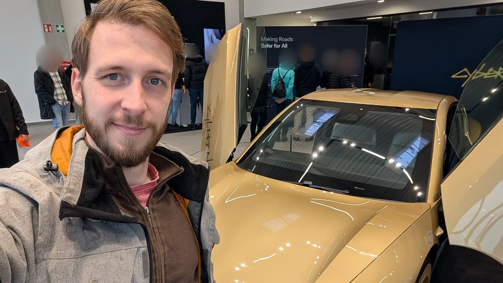
On Friday 20 November I drove from the Netherlands to the Tesla Center in Düsseldorf, where the Cybercab was on display. It was look-and-photo only, no rides, but seeing the two-seater without a steering wheel or pedals in real life made the future feel very close. There were plenty of other fans, and a reporter from the Rheinische Post was there. We ended up talking about Aptera, another efficient electric car I follow, and the next day I was in his article (in German, paywalled) as the Tesla shareholder who came all the way from the Netherlands.
„Er hat Tesla nicht in seiner Garage, sondern im Aktiendepot. Zu gerne würde er den Wagen fahren sehen, aber schon das Design gefällt ihm. ‚Wunderschön, sehr aerodynamisch‘, sagt der Unternehmer mit eigener Firma im 3-D-Druck.“
“He doesn’t have a Tesla in his garage, but in his stock portfolio. He’d love to see the car drive, but he already likes the design. ‘Beautiful, very aerodynamic,’ says the entrepreneur, who runs his own 3D printing company.” (my translation)
The bottom line
He makes mistakes, like anyone who moves this fast. But what he has built outweighs the bad press by a huge margin. He doesn't put on a mask to please the crowd or pretend to be a saint, and I respect that.
Timo Jissink
Sources
All links used on this page, accessed up to 24 Nov 2026. The personal note above is opinion and has no sources of its own.
All sources (185)
- Tesla · All Our Patent Are Belong To You
- Road & Track · Why other car companies dont use tesla superchargers
- TechCrunch, 25 Mar 2025 · Tesla superchargers gm ford rivian and other ev brands…
- US Joint Office (reginfo.gov) · J3400 (NACS) market development update
- Reuters, 1 Nov 2021 · Tesla opens charging network other evs netherlands
- TeslaNorth, 1 Nov 2021 · Tesla opens up superchargers to non tesla vehicles in the…
- Not a Tesla App · Tesla hits 85000 superchargers at 9000 locations worldwide
- IEA · Global EV Outlook 2026: executive summary
- Univ. Bonn CRC TR 224 · Does open source pay off in the EV industry? Tesla's…
- SSRN · A shark or catfish? Tesla's entry into China's EV market
- Business Strategy and the Environment (Wiley) · Driving the electric bandwagon: incumbents' sustainable…
- CNBC, 2 Jan 2026 · Chinas byd to overtake tesla as worlds top ev seller for…
- NASA NTRS · The recent large reduction in space launch cost (Jones)
- NASA NTRS · The impact of lower launch cost on space life support…
- Wikipedia · Falcon rocket statistics (updated 22 Nov 2026)
- Spaceflight Now, 24 Nov 2026 · SpaceX launches classified payload for the U.S. Space…
- SpaceX · Starship Flight 15
- Spaceflight Now, 13 Nov 2026 · Live coverage starship flight 15 attempts to recover full…
- Starlust, 15 Nov 2026 · Elon Musk inspects Starship Flight 15 upper stage: could…
- SpaceWireDaily, 21 Nov 2026 · Following Ship 42's catch, SpaceX looks to the next flight
- Space.com, 21 Nov 2026 · SpaceX will retire 1st Starship upper stage ever caught by…
- Ars Technica, 21 Oct 2026 · SpaceX to attempt Starship catch on next flight, with eye…
- Ars Technica, Apr 2016 · Without nasa there would be no spacex and its brilliant…
- Reuters, 8 Feb 2026 · Musk says spacex prioritise building self growing city…
- Fierce Network · Starlink broadband marches onward 16m new global subs q3
- Starlink · Starlink Progress Report 2025
- Wikipedia · Starlink in the Russo Ukrainian war
- Washington Post, 12 Sep 2023 · Elon musk walter isaacson ukraine
- The Guardian · Elon musk biographer admits suggestion spacex head blocked…
- Kyiv Independent · Ukrainian front line would collapse if starlink is turned…
- BBC · Cy87vg38dnpo
- Musk Industries · How much grid storage has tesla actually deployed
- SEC / Tesla · Tesla Q3 2026 production, deliveries and deployments
- SEC / Tesla · Tesla Q4 and full-year 2025 update
- Reuters, 6 Jun 2023 · Court upholds ruling musk over tesla solarcity deal
- CNBC, 24 Sep 2018 · Tesla solar roof tiles where are they
- Neura Pod · Neuralink 30 patients elon musk
- Neuralink · PRIME study progress update: user experience
- TechBloat · Neuralink blindsight what we know about the vision…
- Tom's Hardware, 29 Oct 2026 · Elon Musk says Neuralink is ready to cure blindness,…
- Ars Technica, May 2024 · Neuralink to implant 2nd human with brain chip as 75 of…
- Reuters, 15 May 2024 · Musks neuralink has faced issues with its tiny wires years…
- Reuters, 5 Dec 2022 · Musks neuralink faces federal probe employee backlash over…
- Reuters, 19 Jul 2023 · Regulator says found no animal welfare breaches musk firm…
- Las Vegas Review-Journal · Boring co s vegas loop paradise line hits snag ahead of…
- Wikipedia · The Boring Company
- Wall Street Journal · Elon musk boring company tunnel traffic
- Tesla · Hyperloop Alpha white paper (2013)
- OpenAI · OpenAI and Elon Musk
- TechCrunch, 1 Mar 2024 · Elon musk openai sam altman court
- AP · Court rejects Elon Musk's claims against OpenAI and Sam…
- Reuters, 18 May 2026 · Elon musk loses lawsuit against openai
- Lawfold · Elon Musk OpenAI lawsuit (updated Oct 2026)
- Reuters, 28 Mar 2025 · Musks xai buys social media platform x 45 billion
- Reuters, 2 Feb 2026 · Musks spacex merge with xai combined valuation 125…
- Washington Post, 25 Jul 2023 · Elon musk paypal twitter x rebrand
- Startups.com · Too crazy to be lucky: interview with Elon Musk
- Reuters, 13 Jul 2024 · Elon musk says he fully endorses tough trump posts photo
- CNN, 1 Feb 2025 · Elon musk 2024 election spending millions
- Reuters, 20 Aug 2025 · Musk quietly puts brakes plans new political party wsj…
- CNN, 20 Aug 2025 · Elon musk america party
- OpenSecrets, Nov 2026 · Elon musks 445m spending spree tops 2026 midterm donor…
- AP · Elon Musk bet $445M to help Republicans in the midterms…
- Reuters via Investing.com · Musk has little to show for his record spending on…
- CBS News · Elon musk not maga midterm spending trump
- Newsweek · Doge is dead what did it actually save
- CNBC, 6 Aug 2026 · Doge elon musk gao government cost cuts
- AP · Auditors find DOGE overstated savings on federal website
- Politico, 12 Aug 2025 · Trump doge contract claims savings inflation
- Reuters, 28 Oct 2022 · Elon musk completes 44 bln acquisition twitter
- Forbes, 5 Feb 2025 · Heres what happened after elon musk cut 80 of xs employees…
- Reuters, 20 Mar 2026 · Musk found liable twitter shareholders fraud lawsuit over…
- CNBC, 20 Mar 2026 · Elon musk determined to be liable for misleading twitter…
- Washington Post, 12 Mar 2021 · Hundreds covid cases reported tesla plant following musks…
- Reuters, 3 Apr 2023 · Jury orders tesla pay 32 mln black ex worker us race bias…
- Reuters, 17 Nov 2025 · Tesla wins bid undo race bias class action by black…
- Electrek, 27 Jul 2026 · Tesla partly settles racism lawsuit hundreds of workers…
- Bloomberg Law · Tesla workers testify to persistent racial slurs as trial…
- Los Angeles Times · Tesla left injuries out of reports california safety…
- Ground News · Musk says he felt pretty foolish about scale of midterm…
- Ground News · Elon musk spent 250 million electing trump including…
- Ground News · Musk announces forming of america party in further break…
- Ground News · Trumps government efficiency department disbands eight…
- Ground News · Elon musks doge made big errors in claims of government…
- Ground News · Jury holds musk liable for misleading investors during…
- Ground News · Elon musks x obtains 44bn valuation in sharp turnaround
- Ground News · Elon musk asks us appeals court to throw out twitter fraud…
- Twitter Files (Matt Taibbi) · Twitter, the FBI subsidiary (Twitter Files part 6)
- Reason, 16 Dec 2022 · Fbi reported jokes tweets twitter files censorship
- Meta, Jan 2025 · More speech and fewer mistakes
- Reuters, 7 Jan 2025 · Meta ends third party fact checking program adopts x like…
- SCOTUSblog, Jun 2024 · Justices side with biden over governments influence on…
- Reuters, 16 Dec 2022 · Twitter suspends accounts several journalists
- NBC News · Musk reinstates suspended journalists twitter poll
- Platformer · Yes, Elon Musk created a special system for showing you…
- The Hill · Elon musk x community notes feature
- Fortune, 21 Feb 2025 · Elon musk community notes x social media content…
- Rest of World · Elon musk twitter government orders
- CCDH · Musk's political posts on X
- Reuters, 4 Nov 2024 · Wrong claims by musk us election got 2 billion views x…
- CNN, 29 Apr 2020 · Elon musk twitter coronavirus
- Wikipedia · List of predictions for autonomous Tesla vehicles by Elon…
- CNBC, 15 Oct 2026 · Tesla roadster reveal what to know about the delayed ev
- The Guardian · Elon musk vernon unsworth trial verdict
- AP · Elon Musk cleared of defamation in 'pedo guy' tweet trial
- Rev (transcript) · DealBook Summit 2023: Elon Musk interview transcript
- Deadline, Nov 2023 · Elon musk advertisers twitter x antisemitism
- TechCrunch, 9 Nov 2026 · Tesla expands robotaxi service to san antonio
- TeslaNorth, 24 Nov 2026 · California sets December 3 vote on proposed robotaxi rules
- Teslarati, 19 Nov 2026 · Tesla Cybercab without steering wheel and pedals expands…
- Reuters via Investing.com · Teslas new roadster turns in air with spacex thrusters…
- Electrek, 25 Sep 2026 · Tesla semi volume production launch nevada factory
- twoweeks.lol · Elon Musk Mars timeline: every date since 2011
- Reuters, 6 Feb 2026 · Spacex delays mars plans focus moon wsj reports
- Reuters, 21 Dec 2023 · High speed transportation firm hyperloop one shut down…
- NPR, 29 Sep 2018 · Elon musk settles with sec agrees to step down as tesla…
- Reuters, 19 Dec 2025 · Musk wins appeal restores 2018 tesla pay deal worth 56…
- Reuters, 21 Aug 2025 · Musk x corp settle 500 million lawsuit over twitter…
- Law360 · Deal to end Twitter ex-workers' $500M severance suit…
- Ground News · Musks x settles ex twitter executives 128 million…
- AP · Sexual images from Musk's AI chatbot harmed consumers,…
- CNBC, 23 Nov 2026 · Oregon virginia spacex grok deepfake lawsuits
- Reuters, 1 Aug 2025 · Tesla ordered by florida jury pay 243 million fatal…
- Reuters, 20 Feb 2026 · Us judge upholds 243 million verdict against tesla over…
- Ars Technica, Sep 2018 · Inside the eight desperate weeks that saved spacex from…
- The Truth About Cars · Tesla Death Watch series (2008)
- US Senate Commerce Committee · Neil Armstrong testimony (May 2010)
- Space.com · 8396 neil armstrong obama space plan poorly advised
- Reuters · Michigan becomes fifth US state to thwart direct Tesla car…
- CNN, 6 Jan 2021 · Tesla shorts losses elon musk win
- Nature Human Behaviour · Negativity drives online news consumption (Robertson et…
- Ars Technica, 10 Feb 2023 · SpaceX says it blocked Ukraine from using Starlink with…
- Reuters, 9 Feb 2023 · SpaceX curbed Ukraine's use of Starlink internet for…
- Starlink · Starlink legal documents (terms of service, section 8.5)
- CNN, 7 Sep 2023 · New Elon Musk biography offers fresh details about the…
- Reuters, 8 Sep 2023 · Musk says he refused Kyiv request for Starlink use in…
- BBC, 8 Sep 2023 · Elon Musk says he withheld Starlink over Crimea to avoid…
- Fortune, 11 Sep 2023 · Isaacson forced to correct failed drone strike detail
- NBC News, 8 Sep 2023 · Musk under fire from Ukraine over Starlink refusal…
- Engadget, Sep 2023 · The US Senate wants answers over Starlink's Ukrainian…
- US Senate, 14 Sep 2023 · Sen. Reed: Starlink highlights vulnerabilities that must…
- NBC News, 15 Sep 2023 · Shaheen, Warren and Duckworth ask DOD if Musk limited…
- Space.com, 2 Oct 2023 · SpaceX wins $70 million Space Force contract for…
- Reuters, 16 Mar 2024 · Musk's SpaceX is building spy satellite network for US…
- Reuters, 9 Mar 2025 · 'Say thank you,' Rubio tells Poland amid Ukraine Starlink…
- Kyiv Independent, Mar 2025 · Starlink will 'never' shut off its terminals in Ukraine,…
- VOA, Oct 2024 · Kremlin denies WSJ report of Elon Musk's contacts with…
- Reuters, 5 Feb 2026 · Ukraine says Starlink terminals used by Russia deactivated
- BBC, Feb 2026 · Elon Musk praised after restricting Russian Starlink use
- CBS 60 Minutes, 18 Mar 2012 · SpaceX: Entrepreneur's race to space (transcript)
- CBS News, Jun 2012 · Editor's note: Neil Armstrong's letter
- Esquire, Nov 2012 · Triumph of His Will (Tom Junod)
- CBS News, Sep 2023 · Book excerpt: “Elon Musk” by Walter Isaacson
- CBS 60 Minutes, 30 Mar 2014 · Tesla and SpaceX: Elon Musk's industrial empire…
- Elon Musk details 'excruciating' personal toll of Tesla turmoil The New York Times, 16 Aug 2018 (summary: NBC News)
- Elon Musk reveals he has Asperger's on Saturday Night Live BBC, May 2021 (and TheWrap on Dan Aykroyd)
- MLive, Feb 2022 · Flint schools unveil Elon Musk-funded water fountains
- Rational Futures, Oct 2025 · Opportunity costs drive the market price of Starship…
- New Space Economy, 21 Jun 2026 · How accurate were Elon Musk's Falcon 9 and Starship $/kg…
- SpaceX · Capabilities & Services (Falcon 9 list price $74M)
- TED, Apr 2022 · Elon Musk: A future worth getting excited about…
- Business Insider, Apr 2020 · Elon Musk: Tesla robotaxi network not this year
- Business Insider, Dec 2018 · Elon Musk on missed Model 3 targets (60 Minutes)
- CNBC, 18 Oct 2018 · Saying this to Elon Musk could get you fired (Vance…
- Walter Isaacson, Simon & Schuster, 2023 · Elon Musk (biography; Tom Mueller quotes)
- California DMV · Tesla takes corrective action to avoid DMV suspension
- CNBC, 23 Feb 2026 · Tesla sues California DMV to reverse false advertising…
- NHTSA · Investigation PE25012: FSD traffic safety violations
- Electrek, 21 Oct 2026 · Tesla pushes unsupervised FSD to Q2 2027
- Digital Trends, 22 Nov 2026 · Tesla FSD v15 rollout
- ElonsFAQ · When will Starship fly hourly? Musk's answers 2020–2026…
- ElonFAQs · How is Starship progressing? (SpaceX Q3 2026 call: weekly…
- What's Up Tesla, 2026 · Musk with Dwarkesh Patel: 10,000 launches a year with…
- Inverse, 2020 · Elon Musk breaks down the cost of reusable rockets (Falcon…
- Ars Technica, 19 Jan 2024 · Rocket Report: a new estimate of Starship costs (Payload…
- Motley Fool, 11 Feb 2024 · The secret to SpaceX's $10 million Starship (Payload…
- TechCrunch, 17 Jan 2020 · Musk: Starship 20 to 30-year service life, ~1,000 flights…
- SpaceX · Starship (100+ t fully reusable; reuse without…
- New Space Economy, 16 Apr 2026 · SpaceX Raptor 3 engines and the next step in Starship…
- ITU, 2025 · Facts and Figures 2025: 2.2 billion people remain offline
- Boring Company (archived 2020) · Boring Company FAQ: tunnels often $100 million to $1…
- The Verge, 19 Dec 2018 · I took a ride through Elon Musk's new tunnel (Hawthorne…
- Ethan Elkind, 2018 · Did Elon Musk just revolutionize tunneling technology?…
- Las Vegas Review-Journal, 1 Dec 2025 · Boring Co. president: ~$10M a mile today, aiming for $3–4M
- SAE International · SAE levels of driving automation (J3016)
Image credits
All photos about Musk and his companies come from Wikimedia Commons under a free licence or are in the public domain (NASA and US government photos). No news-agency photos are used. Click a licence to read its terms. The byline photo and the Cybercab photo in the personal note are Timo Jissink's own; they are not under a free licence, and faces of bystanders are blurred.
Image credits (23)
Images were resized and converted to WebP. CC BY-SA images keep their CC BY-SA licence. Location data was removed from the author's own photos.